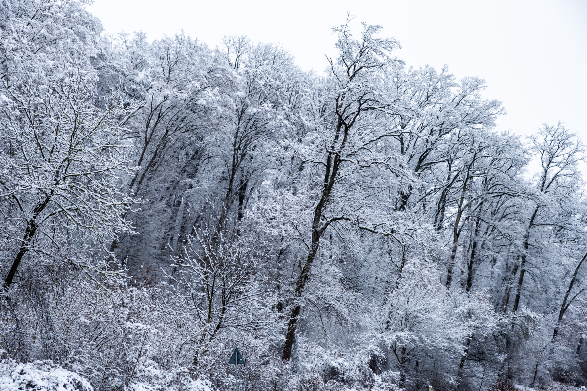

Olaru Razvan Photography
Welcome to my digital world

Poiana Soarelui
Săliște, Octomber 13, 2022
Pe un drum destul de înclinat dar nu foarte dificil, turiștii vor descoperi pe traseul Poteca Soarelui. Cultura lemnului, păduri de fag și pe alocuri de molid. Iar la destinație, în Poiana Soarelui îi așteaptă una dintre cele mai impozante expoziții de sculpturi din lemn în aer liber. Acestea au fost realizate între anii 1981-1987, în cadrul unor tabere de vară care s-au desfășurat la Săliște timp de 7 ani, cu ajutorul comunității, printr-o dragoste mare a primarului Toma Lupaș față de locul lui natal, care a pus foarte mult suflet în amenajarea acestei expoziți de la an la an. 10 sculptori participau la fiecare ediție a taberei și lucrau câte 2 luni în centrul orașului la lucrările de artă, care erau apoi urcate sus în poiană și amplasate. Astăzi au mai rămas intacte 68 de sculpturi care pot fi vizitate.

Cetatea Slimnicului
Slimnic, September 22, 2022
În mijlocul Slimnicului, pe coama unui deal domneşte din sec. al XIV-lea renumita cetatea. Multe a văzut piatra aceasta zidită: a respins atacul turcilor din sec. al XVII-lea şi revolta curuților din sec. al XVIII-lea. Însă aceste conflicte şi-au lăsat amprenta sângerie asupra construcției, rănile şi cicatricile obținute în urma lor fiind încă vizibile. În anul 1706 curuții au dat foc acoperişului, au aruncat clopotele din turn şi au dărâmat zidurile. Peste zece ani au fost strânşi bani pentru reparații, însă o epidemie de ciumă a zădărnicit lucrările. Apoi o parte a cetății a fost dărâmată şi folosită ca material de construcții. Astăzi părți din fortificație se păstrează doar ca ruină, ceea ce însă sporește farmecul cetății. Singură pe vârf de deal, luminată de luna palidă, înconjurată de legende şi întunecată de trecerea secolelor, ruina pare să dormiteze pe veci.
Olaru Razvan
Fotografia pentru mine a fost pură pasiune. Nimeni din familie sau apropiați nu au avut tangență cu fotografia, ca să „mă influențeze”. M-am lăsat purtat de val și am încercat să învăț cât mai multe, să fotografiez astfel încât să atrag atenția celor din jur.
Popular Posts
-
 Bucovina
Bucovina
Pasul Tihuta -

Bucovina
Snowy day on forest -
 Budapest
Budapest
Danube river

Tags
Travel Photography Italia Egipt Transilvania Belgia Street Photography Spania Croatia Peisaje Zanzibar Muntenegru Portrete Maldive Bulgaria